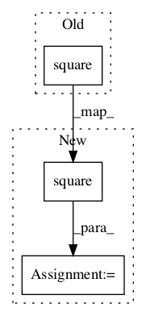

a3fe8bdf1c484e390dfe3947cc395372c0187589,tensorforce/core/distributions/gaussian.py,Gaussian,tf_log_probability,#Gaussian#Any#Any#,104

Before Change
def tf_log_probability(self, distr_params, action):
mean, stddev, log_stddev = distr_params
sq_mean_distance = tf.square(x=(action - mean))
sq_stddev = tf.maximum(x=tf.square(x=stddev), y=util.epsilon)
return -0.5 * sq_mean_distance / sq_stddev - log_stddev - 0.5 * log(2.0 * pi)
def tf_entropy(self, distr_params):
After Change
pi_const = tf.constant(value=pi, dtype=util.tf_dtype(dtype="float"))
sq_mean_distance = tf.square(x=(action - mean))
sq_stddev = tf.maximum(x=tf.square(x=stddev), y=epsilon)
return -half * sq_mean_distance / sq_stddev - log_stddev - \
half * tf.math.log(x=(two * pi_const))
In pattern: SUPERPATTERN
Frequency: 3
Non-data size: 3
Instances
Project Name: reinforceio/tensorforce
Commit Name: a3fe8bdf1c484e390dfe3947cc395372c0187589
Time:
Author: null
File Name: tensorforce/core/distributions/gaussian.py
Class Name: Gaussian
Method Name: tf_log_probability
Project Name: reinforceio/tensorforce
Commit Name: a3fe8bdf1c484e390dfe3947cc395372c0187589
Time:
Author: null
File Name: tensorforce/core/distributions/gaussian.py
Class Name: Gaussian
Method Name: tf_kl_divergence
Project Name: NVIDIA/OpenSeq2Seq
Commit Name: 44ae6129731ee1d225db8a5f1bafea5fd4b9b542
Time:
Author: null
File Name: open_seq2seq/parts/transformer/common.py
Class Name: LayerNormalization
Method Name: call